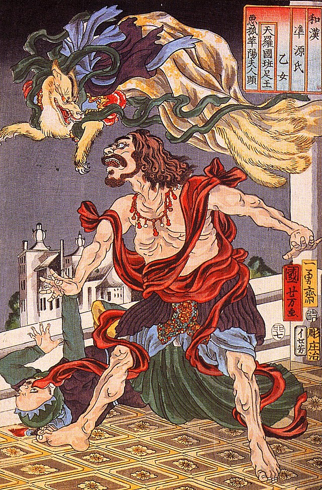
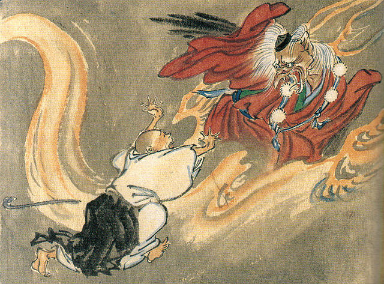
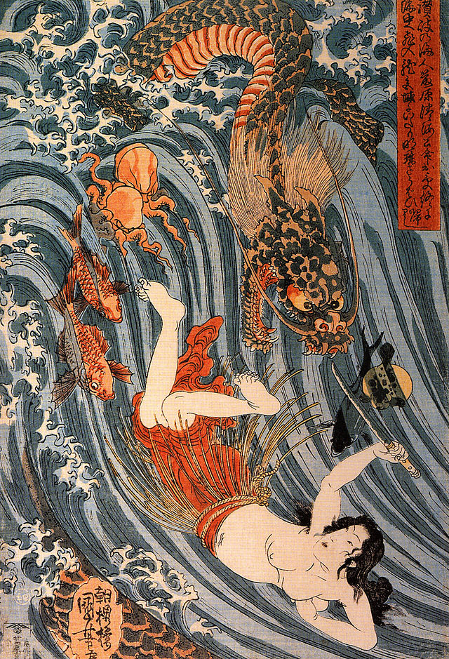
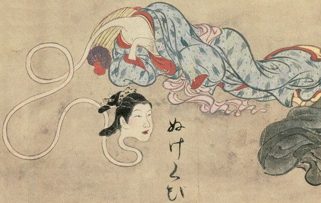
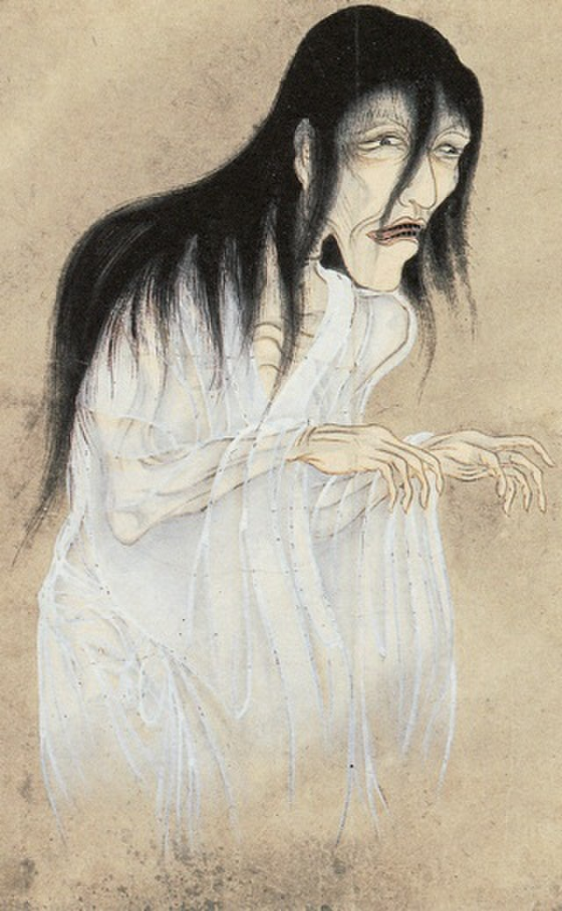
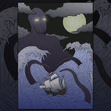
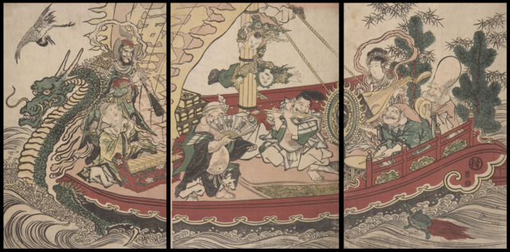

A Mitologia Japonesa é um tesouro de histórias fascinantes, é um sistema de crenças e histórias que se desenvolveu ao longo de milhares de anos no Japão. Ela é rica em deuses, espíritos, criaturas místicas e narrativas que descrevem a origem do mundo, bem como a relação entre os seres humanos, a natureza e o divino. A mitologia japonesa é uma tapeçaria complexa de crenças, deidades e narrativas que evoluíram ao longo de milênios, moldando a cultura e a espiritualidade do povo japonês. Ela é uma parte vital da identidade cultural do Japão e continua a influenciar a sociedade contemporânea de diversas maneiras.
A origem da mitologia japonesa remonta a tempos imemoriais. Muitos acreditam que as lendárias histórias surgiram da interação entre a cultura nativa do Japão e influências de culturas vizinhas, como a chinesa e a coreana. Período Jomon (cerca de 14.000 a.C. - 300 a.C.): Durante esta fase, as crenças dos povos indígenas do Japão, conhecidos como Jomon, começaram a se formar. Eles adoravam forças da natureza e espíritos associados a elementos como árvores e animais.
Período Yayoi (cerca de 300 a.C. - 300 d.C.): Com a chegada da cultura Yayoi, provavelmente vinda do continente asiático, houve uma interação entre crenças locais e influências externas, incluindo o xamanismo e o culto aos antepassados.
O Shintoísmo é a religião nativa do Japão e forma a base da mitologia japonesa. Ele se concentra na adoração de kami, que podem ser deidades, espíritos naturais ou ancestrais. O Shintoísmo não possui um corpo doutrinário formal, mas é enraizado em práticas rituais, festivais e veneração dos kami em santuários xintoístas. A mitologia japonesa também influencia outras religiões e filosofias no Japão, como o budismo, e muitas vezes há uma sobreposição e integração de crenças e práticas religiosas.
Os deuses na mitologia japonesa são conhecidos como "kami". Eles são seres divinos que habitam tudo, desde elementos naturais até fenômenos e objetos inanimados é rica em uma variedade de deidades, cada uma com sua própria esfera de influência e personalidade distinta. Segue abaixo os principais deuses:
As "regiões" geralmente se referem a diferentes reinos ou domínios associados a deidades específicas, e muitas vezes são consideradas como lugares de poderes divinos ou locais de grande importância na cosmologia japonesa.
Takama-no-Hara: Também conhecido como "Planície Celestial Alta", é considerado o reino dos deuses e é associado aAmaterasu. É onde os deuses residem e tomam decisões importantes.
Ashihara-no-Nakatsukuni: Refere-se à "Planície Central Repleta de Relva", que é a terra habitada pelos seres humanos. É o reino físico e cotidiano, onde as pessoas vivem e realizam suas atividades diárias.
Yomi: É o reino dos mortos, às vezes chamado de "Submundo" ou "Terra dos Mortos". É o domínio para onde as almas vão após a morte.
Ne-no-Kuni: Conhecido como o "Reino das Raízes", é associado a Ōkuninushi, uma deidade ligada à prosperidade e à magia. Ele é considerado o senhor deste reino e é muitas vezes venerado como um deus da fortuna.
Ryūgū-jō: Significa "Palácio do Dragão" e é o reino subaquático associado a Ryūjin, o deus dragão dos oceanos. Ele é considerado o governante das águas e das marés. Essas regiões são elementos-chave na mitologia japonesa e muitas vezes servem como cenários para eventos e encontros divinos.
As lendas da mitologia japonesa são narrativas que explicam a origem do universo, dos deuses, dos fenômenos naturais e da própria nação japonesa. Elas são transmitidas oralmente e muitas vezes estão relacionadas a crenças espirituais e práticas religiosas.
Momotaro: Conta a história de um menino que nasceu de um pêssego e cresceu para se tornar um herói que lutou contra ogros.
Urashima Taro: Narra a história de um pescador que salva uma tartaruga e é levado para o Palácio do Dragão no fundo do mar, onde o tempo passa de forma diferente. Tengu no Kakuremino: É sobre um lenhador que ganha uma capa que o torna invisível e encontra Tengu, espíritos da montanha.
O Conto do Cortador de Bambu: Sobre uma princesa nascida de um bambu que é encontrada e criada por um lenhador.
Jiraiya Goketsu Monogatari: É uma história de um ninja que pode se transformar em um sapo e luta contra o mal.
Tengu no Dairokuten: Relata a jornada do herói que enfrenta desafios sobrenaturais para adquirir uma espada mágica.
Susanoo e a Serpente de Oito Cabeças: é uma história central na mitologia japonesa que descreve a bravura e habilidade do deus Susanoo, irmão da deusa do sol Amaterasu. Onde uma serpende é decapitada com a lendária espada japonesa Kusanagi-no-Tsurugi também conhecida como "A Espada Celestial de Kusanagi". Ela é uma das três "Relíquias Sagradas do Japão".
Tsukumogami: são objetos inanimados na mitologia japonesa que, após existirem por cerca de 100 anos, adquirem vida e personalidade. Isso faz com que realizem travessuras em casas, como mover objetos ou criar situações misteriosas. A crença popular é que esses seres surgem quando um objeto atinge 100 anos de idade, e eles são vistos como inofensivos, embora travessos. O termo "tsukumogami" é composto por "tsuku" (que significa "99") e "mogami" (que significa "espírito" ou "alma"). Essa crença reflete a ideia de que objetos podem adquirir uma forma de vida ou espírito após serem usados por tanto tempo.
A mitologia japonesa é rica em uma ampla variedade de criaturas míticas, algumas das quais são benevolentes e outras têm uma natureza mais malévola.
Kitsune: São raposas com poderes sobrenaturais, muitas vezes consideradas mensageiras de Inari, a deusa da fertilidade e do arroz. Elas são conhecidas por sua astúcia e habilidade de se transformar em humanos.
Tengu: Espíritos da montanha que são frequentemente representados com rostos avermelhados e narizes longos. Eles são considerados guardiões de florestas e montanhas, e muitas vezes são habilidosos em artes marciais.
Ryūjin: é uma deidade marinha da mitologia japonesa, frequentemente referida como o "Deus Dragão". Ele é venerado como o governante dos oceanos e mares, e é considerado uma figura poderosa e majestosa.
Rokurokubi: Mulheres que durante o dia parecem normais, mas à noite têm pescoços extensíveis que se alongam. Elas são vistas como figuras assustadoras.
Yurei: São espíritos dos mortos, frequentemente associados a pessoas que morreram em circunstâncias trágicas ou violentas. São representados como figuras pálidas, vestidas em roupas de funeral.
Umibozu: Essa criatura é conhecida por sua natureza malévola e destrutiva, causando tempestades e afundando navios, colocando em perigo marinheiros.
Os Shichi Fukujin são um grupo de sete deidades da sorte da mitologia japonesa, amplamente adorados no Japão e em algumas outras partes do mundo onde a cultura japonesa é celebrada. Cada uma dessas deidades representa uma forma de boa sorte ou virtude, e é frequentemente associada a riqueza, prosperidade e bem-estar. Abaixo, estão os sete membros dos Shichi Fukujin, junto com uma breve descrição de cada um:
Ebisu: Representa a prosperidade nos negócios, especialmente no comércio e na pesca. É frequentemente representado segurando um peixe e uma vara de pesca.
Daikokuten: É associado à riqueza, boa sorte e abundância. Ele é frequentemente representado carregando um martelo de madeira e um saco de arroz.
Bishamonten: Representa a proteção e a segurança, bem como a justiça. É muitas vezes retratado vestindo armadura e segurando uma lança.
Benzaiten: É a deusa da sabedoria, da arte e da música, bem como da riqueza material. Pode ser representada tocando um instrumento musical.
Fukurokuju: Representa a felicidade, a longevidade e a prosperidade. É frequentemente representado com uma longa barba e uma testa alta.
Hotei: Também conhecido como "Buda Sorridente", é associado à generosidade e à abundância. É frequentemente representado como um homem barrigudo, sorrindo e carregando um saco de presentes.
Jurojin: Representa a longevidade e a boa saúde. É frequentemente representado como um homem idoso com uma barba longa.
